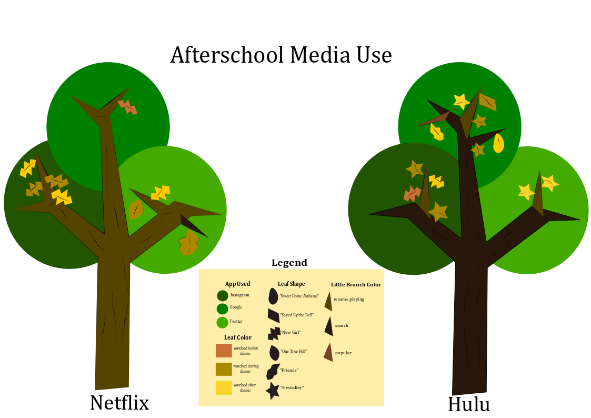

Introduction
Throughout my studies in Writing and Digital Media, I traced my personal media usage, and the intricacies of media programming. In doing this, I became familiar with digital media applications such as Inkscape and iMovie.
Data Collection
In my first project of the semester, the Data Collection, I highlighted the overlaps in my film watching and phone app usage. Since my data mapped out in the form of trees I decided to take that quite literally and turn my data set into physical trees. My findings show that I use Hulu more than Netflix, watch films less often before dinner, find most of my films from resume playing shortcuts, and engage with Instagram more than any other app while watching films. The visualization highlights this information very simply with the guide of the legend. Some may find this data collection quite random, but I have learned this year that my media usage is more frequent while simultaneously watching things from a separate screen.
Data Visualization
Explained Video
After developing my data visualization on personal Netflix and Hulu use, I decided to research the suggestion features behind film applications. I based my search on Netflix rather than Hulu, because of its history and presence in media. During this project I found tremendous amounts of information on not only the history of Netflix as a whole, but how their algorithms adapted over time. Netflix suggestions went from a simple five star rating system, to an intricate recommendation system. this system ranges from over 200 categories of data-- ranging from which category of films you watch most often to recording the pictures you most frequently click on. This project allowed me to not only gain a deeper understanding of an application I use daily, but become more aware of my own media habits.